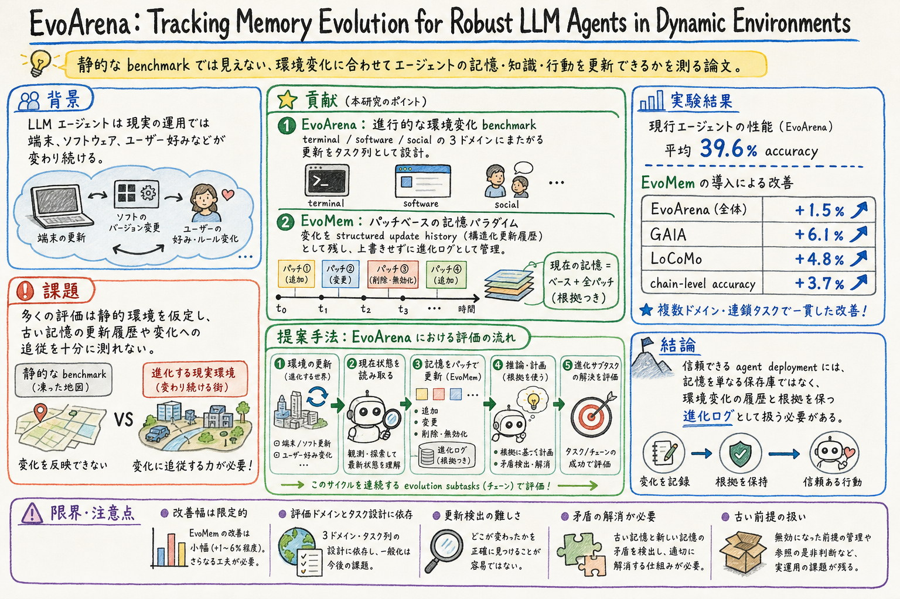

第一の貢献は、静的環境を前提にした既存 benchmark では見えにくい、環境変化への追従能力を測る EvoArena を作ったこと。

この論文の何がいいか
この論文がよいのは、agent memory の評価軸を「必要な情報を覚えているか」から「変化した前提をどう更新しているか」へ動かしている点にある。長期運用の agent では、昔の正しさが今の正しさを邪魔することがある。
個人アシスタント、coding agent、research workflow のどれでも、memory は増えるほど強くなるとは限らない。古い設定、変わった方針、過去の例外、ユーザーの最新 preference が混ざると、検索で正しい断片が出ても行動は間違う。EvoArena はその失敗を評価可能な形にする。
特に patch-based memory という見方は、wiki、AGENTS.md、skill、state を運用する時に使いやすい。上書きされた最終状態だけでなく、どの変更がいつ入り、何を置き換えたのかを履歴として持つことで、古い前提の混入を見つけやすくなる。
どんな論文か
EvoArena は、LLM エージェントが変化する環境にどれだけ追従できるかを測る benchmark suite である。多くの agent benchmark は、タスクや環境が固定された状態で性能を見る。一方、実運用では端末の状態、ソフトウェア仕様、ユーザーの好み、利用条件が少しずつ変わる。
この論文の中心は、記憶を単なる保存済みノートとして扱わないことにある。環境が変わった時、エージェントは古い前提をそのまま使うのではなく、何が変わったかを更新履歴として保持し、現在の状態に合わせて振る舞う必要がある。
著者らは EvoArena で terminal、software、social domains にまたがる progressive updates を作り、さらに EvoMem という patch-based memory paradigm を提案する。EvoMem は記憶の変化を structured update histories として残し、エージェントが環境 evolution を推論できるようにする。
実験では、現行エージェントが EvoArena で平均 39.6% accuracy に留まり、変化する環境への適応がまだ弱いことを示す。EvoMem は EvoArena、GAIA、LoCoMo、chain-level accuracy で改善を示すが、改善幅は限定的で、記憶進化の問題がまだ難しいことも見える。
EvoArena は、動的環境における LLM agent の robustness を測る benchmark suite である。対象は、terminal、software、social domains にまたがる。各 domain では、環境や条件が段階的に更新され、エージェントはその変化を踏まえてタスクを解く。
論文はあわせて EvoMem を提案する。EvoMem は、記憶を一枚の最新メモとして持つのではなく、patch-based memory として更新履歴を構造化して残す。これにより、エージェントは現在の環境だけでなく、そこへ至る変化を推論材料にできる。
課題と貢献
第二の貢献は、terminal、software、social preference という異なる性質の domain をまたいで、progressive updates と chain-level success を評価対象にしたこと。
第三の貢献は、EvoMem によって memory evolution を structured update histories として扱う設計を示したこと。記憶の内容だけでなく、変化の履歴そのものを agent の推論対象にしている。
手法のしくみ
1
入力は、ある時点の環境状態と、そこから段階的に入る update の列である。
2
benchmark 側は、terminal、software、social domains において、更新前の前提だけでは解けないタスク列を構成する。
3
agent は各段階で観測を受け取り、必要な情報を memory に反映し、次のタスクで現在状態に合う判断をする。
4
EvoMem では、変更を上書きメモではなく patch として蓄積する。patch は、何が変わったか、どの記憶に影響するかを structured update history として残す。
5
評価では、個別タスクの accuracy だけでなく、連続する evolution chain を通して変化に追従できたかを見る。
検証結果
これは、静的 benchmark で強い agent でも、変わり続ける条件に合わせて記憶と行動を更新するのが難しいことを示している。
EvoMem は EvoArena で平均 +1.5%、GAIA で +6.1%、LoCoMo で +4.8%、chain-level accuracy で +3.7% の改善を示す。改善はあるが、劇的に解決したというより、更新履歴を持つ方向の有効性を示す初期結果として読むのがよい。
結果からは、agent memory の性能が retrieval の強さだけでは決まらないことが見える。古い前提と新しい前提の関係、更新の粒度、chain 全体での一貫性が重要になる。
課題と議論
この論文は、agent memory を database や vector store としてだけ見る見方を一段進める。現実の運用では、正しい記憶を検索するだけでなく、以前は正しかった記憶が今も有効かを判断する必要がある。
ただし、EvoMem の改善幅は限定的であり、patch-based memory だけで環境変化への追従が解けるわけではない。更新検出、矛盾解消、古い前提の退役、domain ごとの変化モデルなどはまだ残る課題である。
読む時は、EvoArena の task design と EvoMem の具体的な patch 表現を重点的に見るとよい。特に、どのような変化を benchmark が扱い、どのような変化を扱っていないかが、実運用への接続を判断する鍵になる。
次に読むなら
- 次に読むなら、MemRefine: LLM-Guided Compression for Long-Term Agent Memory と並べると、記憶を増やす・圧縮する・更新するという三つの論点がつながる。
- さらに実装寄りに進むなら、Getting Better at Working With You: Compiling User Corrections into Runtime Enforcement for Coding Agents を読むと、ユーザー修正を memory ではなく runtime enforcement に落とす視点が得られる。
- 運用に引きつけるなら、wiki や skill の更新履歴を patch として残し、現在有効なルールと過去の例外を分ける設計メモに展開できる。
読後Q&A
この論文の中心問いは？
LLM エージェントは、環境や条件が段階的に変わる状況で、記憶と行動を現在状態へ更新し続けられるのか、という問い。
EvoArena は何を測る？
terminal、software、social domains における progressive updates への追従能力を測る。静的な一問一答ではなく、変化の列を通して成功できるかを見る。
EvoMem は何が新しい？
記憶を最新状態へ単純に上書きするのではなく、patch-based memory として structured update histories を残す点。
なぜ普通の retrieval memory では足りない？
検索で過去の情報を取り出せても、その情報が今も有効か、どの更新で置き換わったかが分からないと、古い前提に基づいて行動してしまうから。
主な実験結果は？
現行エージェントは EvoArena で平均 39.6% accuracy。EvoMem は EvoArena、GAIA、LoCoMo、chain-level accuracy で改善を示す。
この論文は memory 論として何を足している？
memory を情報保存ではなく、環境変化に合わせて進化する履歴として見る視点を足している。
実務ではどこに効く？
個人アシスタント、coding agent、research workflow で、設定や好みやルールが変わった時に、古い memory をどう扱うかの設計に効く。
限界は？
EvoMem の改善幅は限定的で、patch-based memory だけで問題が解けるわけではない。どの変化を検出し、どの古い前提を退役させるかは残る課題。
読む時に最初に見るべき箇所は？
EvoArena の task/domain 設計、EvoMem の patch 表現、chain-level accuracy の分析を見ると、この論文の価値がつかみやすい。
関連して読みたい論文は？
MemRefine、Getting Better at Working With You、Learning What to Remember を並べると、memory の圧縮、更新、遵守の論点がつながる。